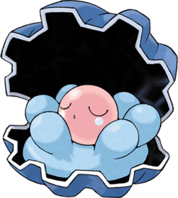

Coquiperl #366
Clamperl
DE 1
Niveau 1
Taille TP
Type 
Classe d'armure 14
Dé de vie d6
Points de vie 18
Vitesse 1.5 m, nage 4.5 m
| FOR | DEX | CON | INT | SAG | CHA |
|---|---|---|---|---|---|
| 13 (+1) | 10 (+0) | 15 (+2) | 6 (-2) | 10 (+0) | 10 (+0) |
Jets de sauvegarde Constitution
Compétences Nature
Vulnérabilités 

Résistances 


Talents
Coque Armure. TODO TRADUIRE This Pokémon is immune to extra damage dealt by a Critical Hit.
Talents cachés
Phobique. TODO TRADUIRE When this Pokémon is hit by a damaging Dark, Bug, or Ghost move, it makes its next attack at advantage.
Évolution
TODO TRADUIRE Clamperl can evolve into Huntail at level 8 and above while holding a Deep Sea Tooth, or Gorebyss at level 8 and above while holding a Deep Sea Scale. When it evolves, its health increases by double its level, and it gains 10 points to add to its ability scores (max 20).Capacités
Niveau 18 Exuviation